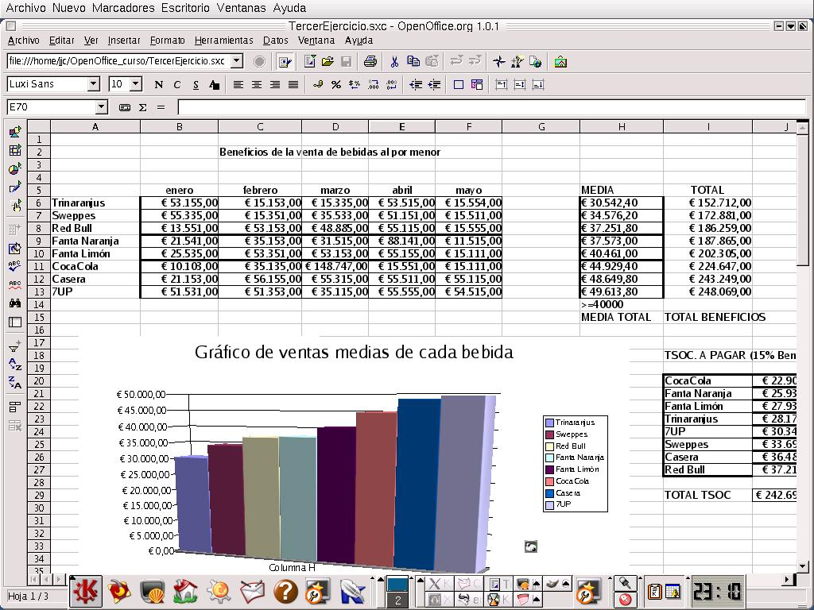
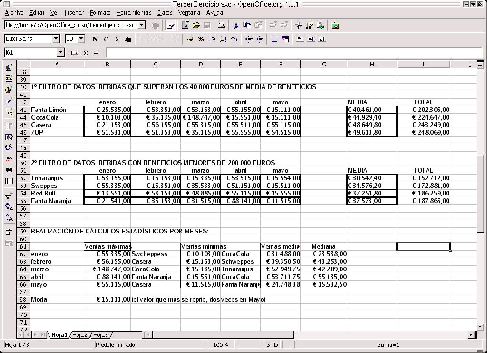
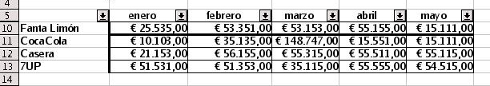
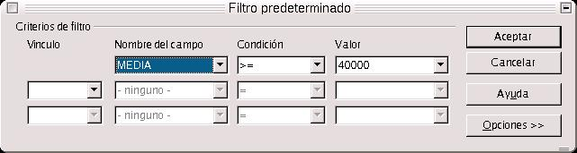
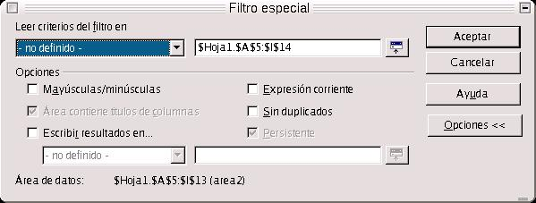
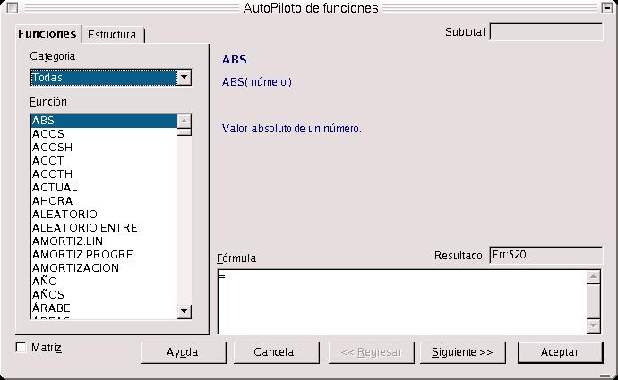

| Herramientas en GNU/LINUX para estudiantes universitarios: La suitte ofimática OpenOffice.org 1.0.1 | ||
|---|---|---|
| Anterior | Capítulo 3. OpenOffice.org Calc | Siguiente |
En esta sección vamos a realizar el tercer ejercicio, en el que tendremos que filtar los datos de las ventas de bebidas, y realizar una serie de operaciones estadísticas sobre ellos.


¿Cómo puedo filtrar los datos?. Puedo hacerlo de tres formas:
- Mediante un autofiltro. Es lo que también se denomina filtro automático. El resultado del filtro se va a presentar en la misma tabla de datos sobre la que estoy trabajando, y por medio de un control combinado situado en un campo, puedo seleccionar el filtro que se aplicará de forma automática. Se muestran sólo aquellos registros de datos que coincidan con el campo de datos.

- Mediante un filtro predeterminado o estándar, en el que se aplica un filtro que está definido por el usuario, y cuyo resultado puede presentarse en otra zona de la hoja de cálculo. Podemos introducir hasta tres condiciones con las que filtrar, con dos operadores lógicos (Y) y (O). El primer operador implica que necesariamente se han de cumplir las dos condiciones y el segundo, que bastará con que se cumpla una de ellas.

- Usando un filtro especial. La diferencia con el filtro estándar es que trasciende el límite de las tres condiciones y permite hasta ocho. Al trabajar con filtros especiales, las condiciones se escriben directamente en la hoja de cálculo.

Para comenzar, vamos a hacer un autofiltro sobre la tabla de datos de Beneficios por Bebida. Primero seleccionamos el área de trabajo en Seleccionar Area, y después en la barra de menús, nos vamos a Datos, y seleccionamos Filtro-->Autofiltro. Inmediatamente aparece, por cada columna, un cuadro combinado de selección. En cada uno de dichos cuadros podemos seleccionar distrintos criterios para el filtro, y los aplicará de forma automática.
Para seleccionar como filtrado el estándar, quitamos primero el autofiltro, seleccionando el área y después yendo a Filtro-->Autofiltro. De esta forma hemos desactivado el autofiltro. Seleccionamos Filtro-->Filtro Predeterminado (o Estándar), y le ponemos el criterio de filtro que deseemos en el cuadro de diálogo, sabiendo cómo funcionan los operadores lógicos (O) y (Y). Para ver las opciones, pulsamos sobre el botón Opciones. La más importante de ellas es la que nos dice que podemos presentar el resultado del filtrado en otra zona de la hoja de cálculo. Para ello, hemos de seleccionar con el botón izquierdo presionado, la zona sobre la cual queremos que se presenten dicho resultado, y pulsamos en Aceptar.
No hablaremos nada del filtro especial, ya que es prácticamente lo mismo que el estándar, solo que tenemos más opciones.
Ahora vamos a pasar a manejar algunas funciones estadísticas.
En el ejemplo se pide hallar las ventas máximas, mínimas, la moda y la mediana. Para ello, lo primero es crear los encabezados de columna, separados entre ellos por una columna, los siguientes encabezados: Beneficios Máximos, Beneficios Mínimos, Beneficios Medios y Mediana, tal y como se muestra en la segunda ilustración del presente capítulo.
Nos vamos a la columna Beneficios Máximos. En la misma situaremos los beneficios máximos obtenidos en cada mes. Pulsamos, dentro de la barra de función, en el botón Autopiloto de funciones.
En el cuadro de diálogo, nos aparece en el campo combinado de Categorías, un listado de las categoría de funciones que se pueden ejecutar en Calc. Dichas funciones se clasifican en estadísticas, matemáticas, Matemáticas, Bases de Datos,Finanzas, Información, Fecha y Hora, Lógicas, etc..

Para implementar la función estadística Valor Máximo, seleccionamos Estadística dentro de Categoría, y en la lista de funciones, elegimos MAX, acrónimo de Valor Máximo, y que devuelve el valor máximo de una lista de argumentos. Al presionar sobre Siguiente, nos aparece un cuadro de diálogo, en que se nos pide que introduzcamos los argumentos. En vez de introducirlos directamente a mano, podemos seleccionarlos en la hoja de cálculo, manteniendo presionado el botón izquierdo del ratón. Para el caso del mes de Enero, seleccionamos como lista de argumentos todos los datos de la columna Enero. Pulsamos en Aceptar e inmediatamente nos halla el valor máximo dentro de la lista de argumentos. Así procederemos hasta llegar al mes de Mayo.
Lo mismo para la columna Beneficios Mínimos, ponemos el encabezamiento, nos vamos al Autopiloto de Funciones, elegimos estadísticas, y como función MIN. Seleccionamos los argumentos, aceptamos y aplicamos para todos los meses.
La función que calcula los Beneficios Medios se llama MEDIA.ACOTADA. Hacemos lo mismo que en los dos casos anteriores.
Para hallar la mediana, la función se llama MEDIANA, como su nombre indica
También, y como su nombre indica, la función para calcular la moda se llama MOD. Podemos, para probar, implementar otras funciones de las que permite OpenOffice.org Calc.